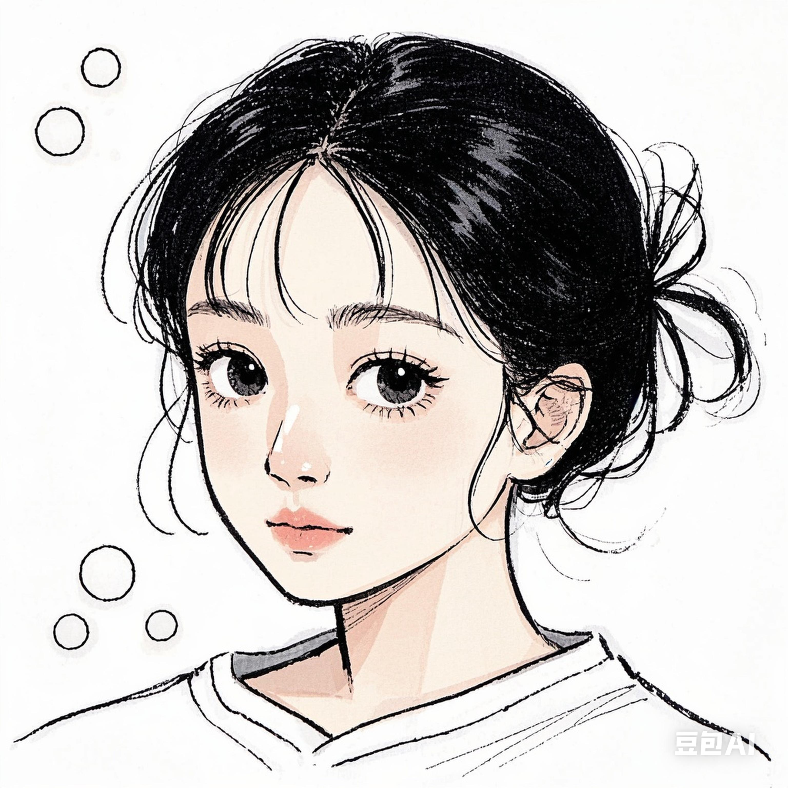

关于我们
“十人书巢”是一个充满温馨与知识的地方，在这里，十位热爱书籍的伙伴汇聚一堂，共同分享阅读的快乐与感悟。我们希望通过书巢，让更多人感受到书籍的魅力。
"Ten People's Book Nest" is a place full of warmth and knowledge. Here, ten book lovers gather together to share the joy and insights of reading. We hope to let more people feel the charm of books through the book nest.

昵称：老大
性别：女
介绍：ISFJ的上班族一枚，爱好读各种类型书籍，尤其是科幻类小说。
昵称：老二
性别：男
介绍：INTP的学生党，痴迷于哲学类书籍，喜欢深度思考。
昵称：老三
性别：女
介绍：ENFP的自由职业者，热爱文学类书籍，擅长写作。
昵称：老四
性别：男
介绍：ISTJ的工程师，喜欢历史类书籍，对古代文化有深入研究。
昵称：老五
性别：女
介绍：ESFJ的教师，热衷于教育类书籍，致力于提升教学质量。
昵称：小六
性别：男
介绍：INTJ的创业者，专注于商业类书籍，有敏锐的市场洞察力。
昵称：小七
性别：女
介绍：ENFJ的活动策划，喜爱心理学类书籍，善于与人沟通。
昵称：小八
性别：女
介绍：ISTP的摄影师，钟情于艺术摄影类书籍，作品富有创意。
昵称：老九
性别：女
介绍：ESFP的演员，热爱戏剧类书籍，舞台表演经验丰富。
昵称：小十
性别：女
介绍：INFP的音乐人，喜欢音乐理论类书籍，擅长创作旋律。